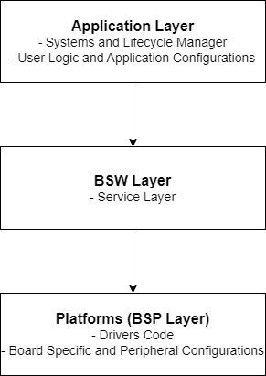

Welcome to Eclipse OpenBSW
This project provides a SDK to build professional, high quality embedded software products. This is a software stack specifically designed and developed for automotive purpose.
This repository describes the complete environment required for building and testing the target, including support for both POSIX and the S32K148EVB platform. It provides the service layer, driver code and configuration files, along with detailed user documentation.
If you are new to this, take a look at Getting Started.
Structure of the Stack
{kind=link}

Eclipse OpenBSW includes a demo application that showcases the use of ADC, PWM, GPIO, UDS, CAN and Ethernet communication.
The stack is implemented in C++ to leverage flexibility and optimization. It has been designed with efficiency in mind, offering freedom for customized implementation to address project-specific use cases.
Runtime Behavior Overview
The main.cpp contains systems that are added to the lifecycleManager with a specific runlevel.
Check CanSystem and DemoSystem for reference.
app_main() is the entry point for the generic application code.
POSIX:
The
executables/referenceApp/platforms/posix/main/src/main.cppis the entry point for POSIX platform.
S32K148EVB:
The
executables/referenceApp/platforms/s32k1xx/main/src/main.cppis the entry point for S32K148EVB platform.StaticBspis a class which contains platform specific BSP modules like ADC, PWM and CAN.BspSystemclass is used to handle bsp modules and its cyclic functions withlifecycleManager.
Unit tests
Note that the folder executables/unitTest is the entry point for all unit tests.
It contains also some modules to satisfy platform specific dependencies for the unit tests.
CMake
Code coverage
Code coverage is a metric that measures the percentage of code executed during testing, helping assess the effectiveness of tests and identify untested areas. This helps developers identify untested areas of the code, optimize test cases, and improve overall software quality.
GCOV is a coverage testing tool that comes with GCC and is used to collect and analyze code coverage data during the execution of test cases. It generates reports showing which parts of the code have been executed, including line, branch, and function coverage.
LCOV is an extension of GCOV that enhances its functionality by providing more user-friendly reports, typically in HTML format. While GCOV generates raw coverage data, LCOV collects and processes this data to produce graphical, easy-to-read coverage summaries, helping developers visualize and analyze the results more effectively.
# capture the coverage
lcov --capture --directory . \
--output-file build/tests/posix/Debug/coverage_unfiltered.info
# filter out the coverage of 3rd party googletest module as it is not used on target and
# also coverage for mocks
lcov --remove build/tests/posix/Debug/coverage_unfiltered.info \
'*libs/3rdparty/googletest/*' \
'*/mock/*' \
'*/gmock/*' \
--output-file build/tests/posix/Debug/coverage.info
# create a HTML report
genhtml build/tests/posix/Debug/coverage.info \
--output-directory build/tests/posix/Debug/coverage
Note
lcov can be installed with sudo apt install lcov
Explore the code
You can now explore the code, make your own changes and learn how it works.
Refer to application page for detailed information about demo application and start making your own changes in DemoSystem.
Refer to posix main and S32k148 main pages for information about BSP system handling.
Refer to bspConfiguration - S32k148EVB page for Driver configuration and pin mapping.
Also refer to the beginners guide pages below:
Eclipse OpenBSW is a trademark of the Eclipse Foundation.